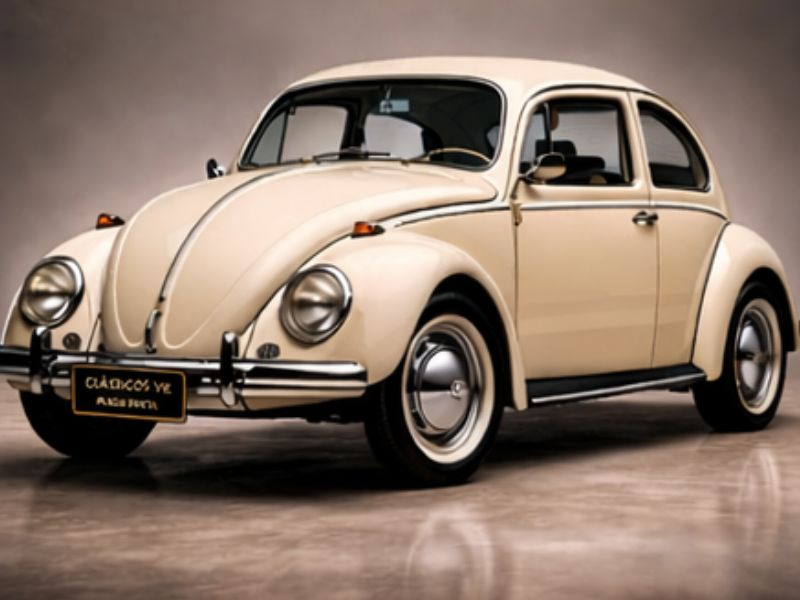
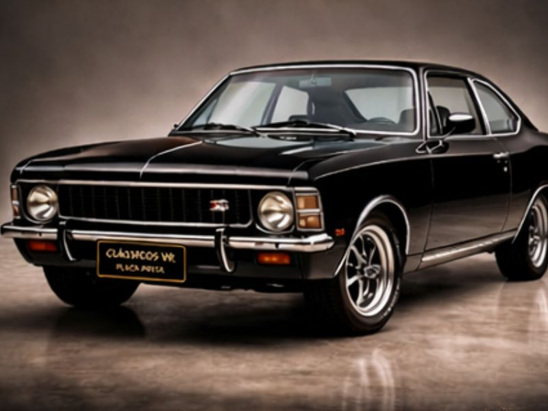
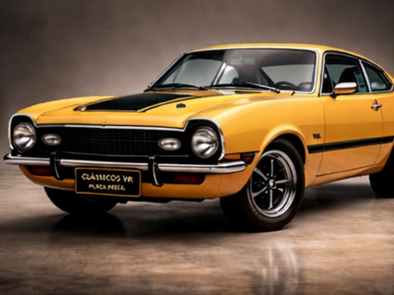
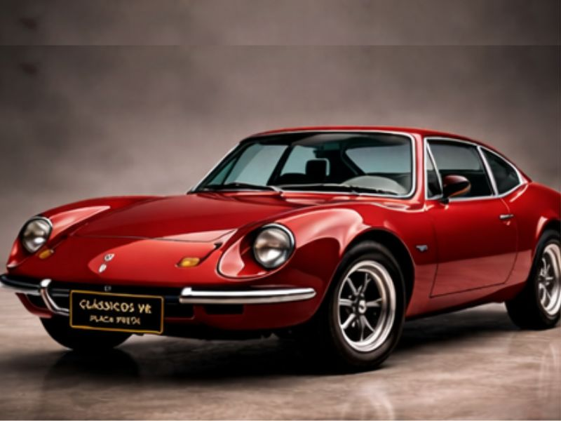
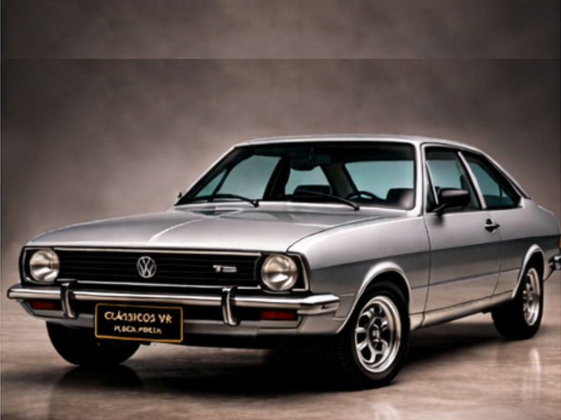
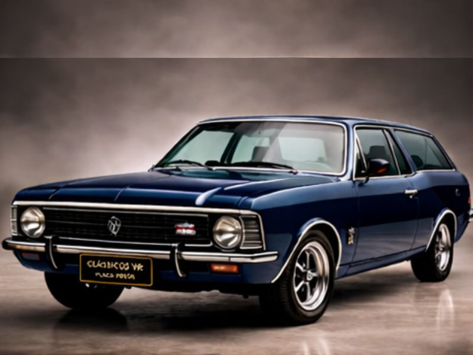

Sua paixão por clássicos merece a Placa Preta.
Certificamos veículos com mais de 30 anos e 80% de originalidade, com laudo reconhecido em todo o Brasil. Faça parte da elite dos colecionadores e valorize seu patrimônio automotivo.
Por que ter a Placa Preta?
Um veículo com placa preta não é apenas um carro antigo, é um pedaço da história automotiva. Mostre que você preserva o passado e valoriza o futuro.
Reconhecimento histórico
Seu veículo oficialmente reconhecido como patrimônio cultural e colecionável.
Valorização de mercado
Aumento significativo do valor comercial com certificação oficial.
Documentação regularizada
Certificado de originalidade reconhecido pelo DETRAN em todo país.
Orgulho e tradição
Preserve a história automotiva e mostre sua paixão por clássicos.
Como funciona o processo?
Um processo simples, seguro e totalmente orientado por especialistas
Envie os dados e fotos
Preencha o formulário com informações do seu veículo e envie fotos detalhadas.
Avaliação e orientação
Nossa equipe avalia e orienta sobre adequações necessárias para certificação.
Vistoria agendada
Agendamos vistoria com especialistas credenciados em sua região.
Certificado e Placa Preta
Receba o Certificado de Originalidade e conquiste sua Placa Preta oficial.
Galeria de Clássicos Certificados
Cada veículo conta uma história, cada Placa Preta celebra um legado

Volkswagen Fusca

Chevrolet Opala

Ford Maverick

Puma GTB

Volkswagen Passat

Chevrolet Caravan SS
Casos de Sucesso
Centenas de proprietários já conquistaram sua placa preta com a Clássicos VR
"Sempre sonhei com a placa preta no meu Opala. A Clássicos VR fez tudo de forma rápida e segura. Orgulho define!"
João Paulo SilvaChevrolet Opala 1978
"Processo transparente do início ao fim. Meu Maverick agora tem o reconhecimento que sempre mereceu."
Roberto MendesFord Maverick 1975
"Valorização imediata após a certificação. Recomendo a Clássicos VR para todos os apaixonados."
Carlos EduardoVolkswagen Fusca 1968
Quem é a Clássicos VR?
Somos especialistas apaixonados por veículos clássicos no Rio de Janeiro e região. Com experiência no mercado, ajudamos colecionadores a conquistarem a certificação oficial de originalidade, garantindo a valorização e o reconhecimento do seu patrimônio automotivo.
Seu clássico pode valer muito mais hoje
Fale agora e descubra se pode receber a Placa Preta
Falar com especialista